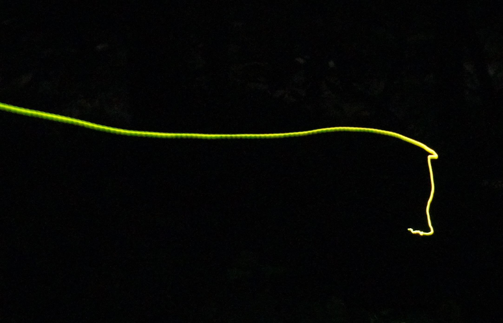
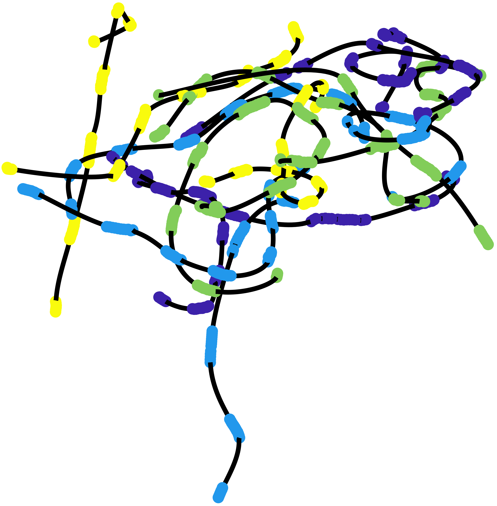

trajectories
dots and curves in the dark

Blue Ghost (Phausis reticulata) lingering.
RS, Great Smoky Mountains National Park
Firefly flight paths remain mysterious.
This is primarily because they move in the dark where we can't see or follow them.
Of course, their luminous streaks offer a glimpse at where they are and how they move for a fraction of a second, but they quickly vanish into the night.
And that might be exactly the point: by emitting brief flashes, they convey enough information for their mating dialogues, but too little for predators to chase and catch them.
Most fireflies produce single flashes every few seconds. Some others assemble flash "phrases", which are regular sequences of several flashes in a row with a constant short interval between them. Finally, a handful of species can glow continuously for several seconds. But even these long curves can be difficult to comprehend, since in the dark our perception of distances is impaired by the lack of contextual landmarks. Some fireflies, even, don't flash at all! These are called "diurnal", "winter" or "dark" fireflies. Some of them have a glowing larva or vestigial lanterns.
Long exposure photographs, which capture the background as well as many flashes in a row, can give some idea about how fireflies move. But the most accurate technique is to record fireflies with two cameras, which provides a 3D information of the location and shape of streaks. The long glowing trajectories can then be completely reconstructed. For the flash phrases, it is possible to extrapolate between successive flashes to form a longer trajectory. But for single-flashers, we can only look at separate streaks — which sometimes have an interesting shape on their own — since we can't know where they go after a few seconds...
Finally, it's also possible to use infrared light to fully illuminate their trajectories. But even then, fireflies are quick to escape the camera's field-of-view or hide amonst the vegetation.
Trajectory gallery...
Great Smoky Mountains National Park 
Great Smoky Mountains National Park
Congaree National Park